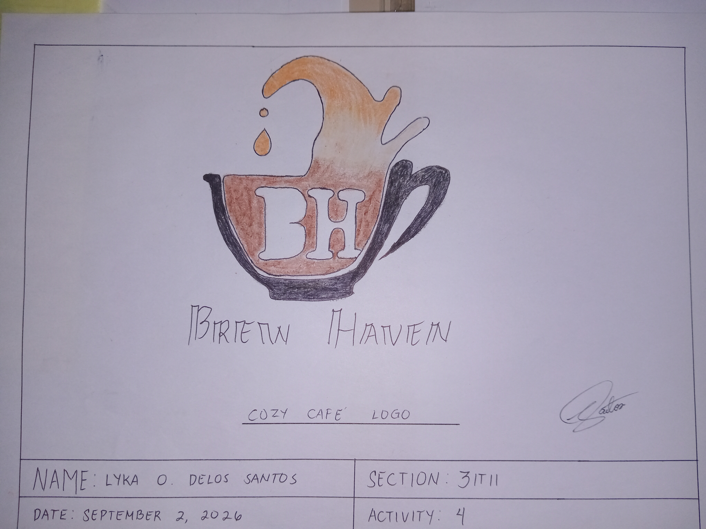
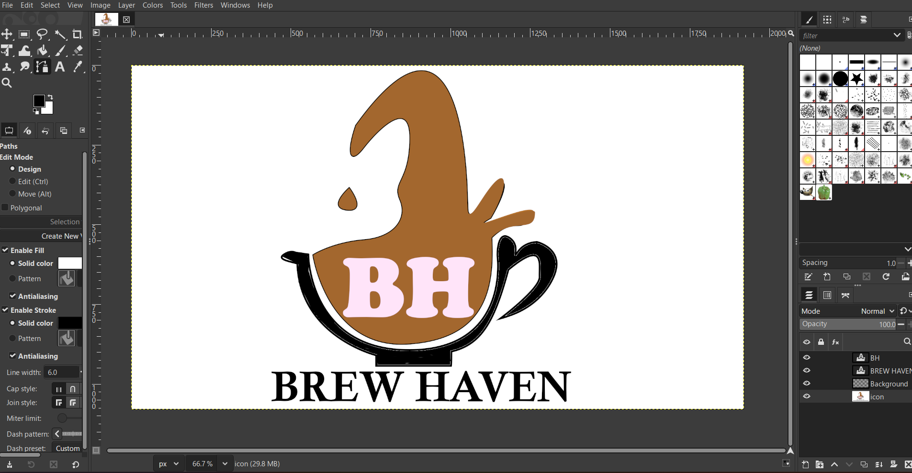

← Back to Projects
← Back to Projects
← Back to Projects
← Back to Projects
Activity 4
A cozy café logo concept that represents warmth, creativity, and the welcoming atmosphere of Brew Haven.
For this activity, I designed a logo concept featuring a coffee cup with a splash of coffee above it, incorporating the initials "BH" inside the cup to represent Brew Haven. I used warm brown and caramel tones to create a cozy and inviting appearance. The design aims to establish a memorable café identity while communicating the warmth and comfort associated with a coffee shop.
STAGE 01
This is my initial hand-drawn concept before transforming it into digital art.

The first stage of the project, where I planned the composition, layout, and overall appearance of my design.
STAGE 02
Here is the finished digital version of my original sketch.

I used Gimp to create and develop the Brew Haven logo. Through the software, I arranged the visual elements, refined the coffee cup illustration, and enhanced the overall appearance of the design to achieve a warm and inviting cafe identity.
.png)
The completed design after applying colors, typography, visual elements, and other design improvements.